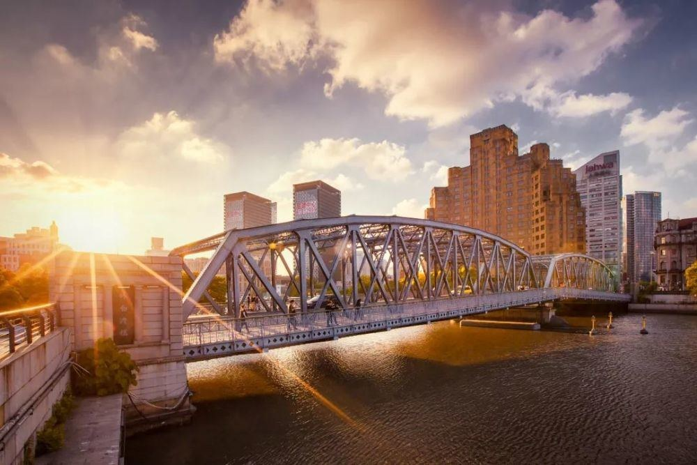
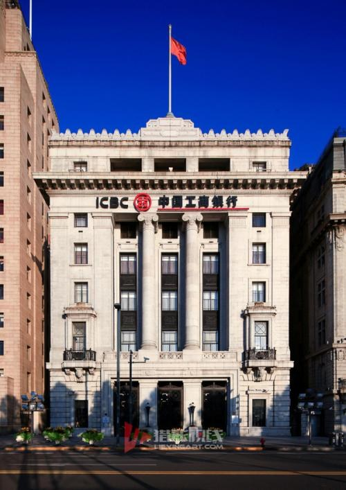

早就盼望一睹“最美滨江”的风采，却一直没有机会成行。
去年女儿回国度假，照例商量一下到哪里去玩，我毫不犹豫地提出：何不沿着最美滨江走一走?
金秋时分，阳光正暖。黄浦江面上，波光粼粼。时有船只驶过，激起波浪，轻轻地拍打着堤岸。
我们沿着杨浦滨江一路向西，朝虹口方向前行，沿途风光旖旎、目不暇接。以往熟悉的一座座厂房，摇身一变成了一段段独特的景观；黑色骑行道和红色慢跑道蜿蜒向前；那些水管状的路灯、装了仪表盘的长凳、工业装置模样的垃圾桶……无一不吸引着我们的目光。
一路都有艳丽的鲜花、碧绿的青草陪伴，其间居然还看到了芦苇，我没想到芦苇也可以拿来做装饰，当年它们在崇明的江堤边是那样的普普通通、毫不起眼，今天也来为美丽滨江出力。芦苇随风摆动、婀娜多姿，让我一个老知青备感亲切！
不知不觉中，我们来到了上港油轮城。它荣获国家4A级景区，被誉为“上海城市滨水时尚新地标”。果然名不虚传，颀长的滨江岸线，将浦江璀璨的景色尽揽怀中。
眼前的风景，真可谓五彩缤纷。我不禁有些怀疑自己的眼睛，这里真是我在学生时代十分熟悉的上港五区么?
上港五区曾经是一个外轮港口，装运吞吐世界各地的货物。记得文革时期，中学生的我，每周四要和同学们一起来这里“学工”，也就是干上整整一个通宵的装卸工。
那些十几层楼高的万吨轮在毛头孩子眼里可真是庞然大物，每次从舱面沿着陡直的铁梯，手脚并用、一顾一盼、一步一趋地倒退着“爬”到舱底，就已经有点气喘吁吁了。
搬运的货物都是散装的，那时也没有什么机械，全靠手提肩扛。从傍晚干到天明，真正是精疲力竭！
但是，每次劳动结束，回到舱面，却总有一小段美好的时光。此时，天色微微放亮，我并不急于回家。借着晨光，正好有机会仔细端详一番这个“庞然大物”。平整的甲板、轰鸣的轮机、粗粗的烟囱、还有那外轮餐厅飘出的特有的缕缕面包香味……都会引起我的兴趣，我深吸一口清晨的带有面包香的空气，再仔细瞅一瞅那船上悬挂着的国旗，弄清楚这艘轮船是希腊的或是瑞典的。
江上微风习习，拂面而来，引我遐想：何时我国也能造出更棒的万吨轮来……
如今，这一切都已经梦想成真！昔日的上港五区已经蜕变成今日的“油轮城”，真是今非昔比呀！
一眨眼，“彩虹桥”来到了眼前。我们登上桥顶，极目远眺，这边，陆家嘴的现代楼宇摩登时尚；那面，外滩的万国建筑群典雅端庄……
继续一路向西，来到了大名路，左拐进入青浦路，再右拐便到了黄浦路，离外白渡桥越来越近了！
我仿佛已经听到了桥下那熟悉的、川流不息的江水声，思绪也随着这江水流向了那遥远的年代。
我的童年跟外白渡桥紧密相连。
1948年，我诞生在大名路西端的“百祿坊”里。这是一条典型的石库门弄堂。它的东侧与青浦路相通，后弄堂开口朝向黄浦路。沿着黄浦路走到外白渡桥，不过七八分钟的时间。从后弄堂到黄浦路再到白渡桥，这是我幼时的乐土。多少个白天，我和小伙伴们，在这里玩“强盗赛”，多少个夜晚，我和小伙伴们，在路边停泊的大卡车上，爬上翻下玩捉迷藏，童年的趣事一件件浮上心头。
捉蟋蟀可算得上儿时最感兴趣的事情之一。某个秋晚，我被一阵阵悦耳动听的“唧唧”声，惹得心跳手痒。随即拿起手电和一个罐子，走出了家门。
远远地听见蟋蟀叫，循着声音轻轻的走过去，蹑手蹑脚地靠近，侧着耳朵仔细辨别声音的方向，那个小精灵，狡猾得很！似乎知道有人来了，就猛然停住不叫。这时的我，展现出平时难以想象的耐心，屏住呼吸，静静的等待。也许是那蟋蟀听到四周同伴都在你唱我和，终于按捺不住，又亮开嗓门叫了起来……
那天，我鬼使神差地走遍了大名路、青浦路和黄浦路。一路光顾了多少个墙角、花坛、街沿，聆听了无数只蟋蟀的独唱和合唱，结果却一无所获。最终还是回到家里，在自家的天井里，逮到了梦寐以求的蟋蟀，也算是如愿以偿了。
这条黄浦路又是我印象中的阿里巴巴宝库。
黄浦路上的禽蛋二厂门口终年堆放着层层叠叠的运送禽蛋的箩筐。那些箩筐上粘着禽蛋破碎后流出的蛋黄、蛋清。腐败了，发出刺鼻的臭气。箩筐用竹制成，一不小心就会被那些尖锐的竹刺和铁丝刺伤了手脚。但是这些都吓不倒我们。我们感兴趣的是箩筐上那些竹片。一旦发现了一条比较宽、比较直的“品相姣好”的竹片，那简直是如获至宝！小心翼翼地左右拽动、软硬兼施地拔出竹片。回家用钢丝锯、美工刀、粗细砂纸，精心加工成一把大刀或宝剑，用粗笔写上“青龙偃月刀”或“尚方宝剑”，可以把玩整整一个假期呢！
炎热的夏天来了。那时压根儿没有空调，连电扇也是罕见之物。为了追求凉快，孩子们又来到了黄浦路上。一辆运冰的卡车或黄鱼车驶过，后面一群赤膊短裤的小孩紧追不舍，车上偶尔会掉下一些碎冰，能得到一块大一点的碎冰，便是孩子们最大的企盼……
沿着黄浦路缓缓的前行、细细地品味，那些童年的陈年往事，虽然已经久远，却依然是那样清晰，想起来还是能让我心动呵！
走过了飘扬着三色旗的俄罗斯领事馆，我们终于登上了外白渡桥！
站在桥上，眺望四周，不禁深深感叹：桥的这边和那边，发生过多少令人难忘的故事，留下了多少甜蜜美好的记忆！
外白渡桥南堍东侧是著名的黄浦公园。而西侧有一个“小人公园”，则鲜为人知了。
那其实就是一块不大的绿地，几条石凳，一个沙坑。虽然一点也不起眼，却是孩子们的乐园。平整的水门汀地上，可以跳绳、踢毽子、打三毛球……，那个沙坑里，我们挖过无数个四通八达的地道。孩子们在这里尽情地欢乐，“小人公园”的美称，或许就是孩子们给它起的。给我留下深刻印象的是：这里一度办起了一间简易的儿童阅览室，有免费的“小人书”可看，小伙伴们一传十、十传百，大家结伴前往，一饱眼福。在这里我看到了孩时心目中最为扣人心弦的侦探小人书——《一颗铜钮扣》，至今我还记得书名。
从桥上眺望黄浦公园，高耸的上海市人民英雄纪念塔、外滩历史纪念馆、大型浮雕……尽入眼底。这座小巧的“外滩公园”随着时间的流淌，模样已经大变。但在我心中却依然保留着它旧时那亲切可爱的样子。
那年，我小学毕业，正紧张地准备中考。听弄堂里那些家中住房紧张的小伙伴们说，到外滩公园复习功课效果忒好。我在家中虽然有自己的读书之地，但也很想去尝试一下。某日，我起个大早来到公园。公园被一层淡淡的薄雾笼罩着、静静的，完全没有了平日的喧闹。园内有一处茶室，平时我们来玩，从来不对它多看一眼。没想到，茶室前一片空旷地上，摆放的那些藤椅、茶几，居然日夜都不撤去。茶室开张尚早，正好为我读书所用。坐上藤椅，比坐在柔软的沙发上还舒服。那个早晨复习功课，效率特别高。仿佛整个外滩公园就只有我一个人似的！
秋季，我终于考上了心仪已久的师大一附中。那年，我家姐弟仨同时在师大一附中就学，在弄堂里常常引来邻居们羡慕的目光。
为了庆祝这一开心的时刻，我们姐弟仨特地到外白渡桥北堍的众艺照相馆照相留念。那个年代，每拍一张照片，都是郑重其事的。众艺照相馆曾经为我们拍摄过好多张全家福、报名照、毕业照，但是纯粹为了开心，来“众艺”照相，这还是第一次啊！
1968年，上山下乡的大潮把我推向了崇明农场。
从“百祿坊”到崇明东风农场，沿途乘的第一辆公交是65路，车站就在上海大厦对面。
出发那天，父亲、母亲、姑姑为我送行，大件行李已经在数日前运走了，我们得以轻装前行。出了后弄堂，沿着黄浦路，我们走得很慢。禽蛋二厂、海军司令部、礼查大楼、苏联领事馆……这些相识已久的老朋友也都来为我送行，再回头深情地望一眼外白渡桥，在心中默默地和它告别……
我在崇明待了将近十年，每次回沪，都要到外白渡桥走一走。它俨然成了我的老朋友了！
1977年，我在农场参加高考，幸运地成了恢复高考后的第一批大学生。回沪后，第一件事情就是把好消息告诉 “老朋友”。我又一次来到了桥上，手扶桥钉、思绪万千，崭新的生活开始了！多少美好的憧憬涌上心头！
沿着最美滨江，来到了外白渡桥上，女儿一路陪伴在侧，言语不多，任由我望风怀想。她能理解一个老人心中深深的桥的情结吗？
想不到，她却一语中的：“外白渡桥是老爸心中永远的外婆桥！”
思绪沿着外白渡桥继续延伸，过桥向南，便是举世闻名的外滩。
外滩24号，工商银行上海分行所在地，一幢庄重典雅的大楼，曾被一家英文报纸赞为“一颗新嵌到外滩皇冠上的珍宝”。它是我孩提时心中真正的“珍宝”。
父亲是人民银行（工商银行前身）的职工。每到春节，在外滩24号都会组织职工举办娱乐活动，父亲牵着我，走进这“高高的殿堂”，那种兴高彩烈、欢天喜地的心情，至今记忆犹新。
印象最深的是那次猜灯谜了。当天，现场无数灯笼高挂、五彩纸条飘飘，那时我年岁尚小，灯谜上的字能认全已属不易，要猜出谜底来，真是勉为其难了。一位叔叔扯下一条灯谜，塞到我手中，说：“快去兑奖，就说‘liu yi’”。我照此办理，果然得到了奖品。但是这个“liu yi”究竟是什么意思呀，事后猜了好久，我才确定那一定是“六亿”，因为那年，我国人口正好刚过六亿。
江水奔涌、时代变迁。四十余年来，祖国改革开放、日新月异；我也成家立业，有了一份自己深爱的职业。最美滨江，见证了已经发生的美好的一切！也必将见证更加美好的未来！
（本文刊登在2020.4.21《杨浦时报》）

外白渡桥是我幼时的乐土

外滩24号工商银行大楼是我孩提时心中真正的“珍宝”